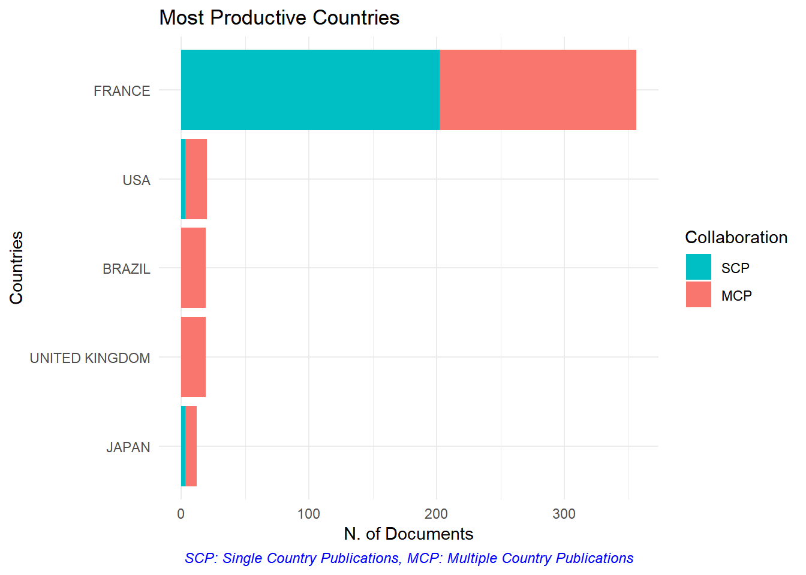

2 Scopus et Web of Science
Le package bibliometrix permet d’exploiter les données des bases de données commerciales majeures.
La vignette du package décrit l’ensemble de ses possibilités.
vignette(topic = "bibliometrix-vignette", package = "bibliometrix")2.1 Lecture des données
Voir la première partie de la vignette. Sur le site de Scopus (utlisé en exemple), sélectionner les références utiles et les exporter dans un fichier Bibtex. L’export doit contenir tous les champs, y compris le résumé et les documents cités.
Le fichier est ensuite lu et converti:
library(bibliometrix)
# Fichier de données au format bibtex, exporté de Scopus
D <- readFiles("scopus.bib")
# Conversion en dataframe
M <- convert2df(D, dbsource="scopus", format="bibtex")##
## Converting your scopus collection into a bibliographic dataframe
##
## Articles extracted 100
## Articles extracted 200
## Articles extracted 300
## Articles extracted 400
## Articles extracted 500
## Articles extracted 600
## Articles extracted 658
## Done!
##
##
## Generating affiliation field tag AU_UN from C1: Done!2.2 Analyses basiques
Les analyses de base sont retournées par la fonction biblioAnalysis.
BA <- biblioAnalysis(M)
summary(BA, k=5)##
##
## Main Information about data
##
## Documents 658
## Sources (Journals, Books, etc.) 246
## Keywords Plus (ID) 4997
## Author's Keywords (DE) 2100
## Period 2001 - 2017
## Average citations per documents 22.08
##
## Authors 3204
## Author Appearances 6700
## Authors of single-authored documents 2
## Authors of multi-authored documents 3202
## Single-authored documents 6
##
## Documents per Author 0.205
## Authors per Document 4.87
## Co-Authors per Documents 10.2
## Collaboration Index 4.91
##
## Document types
## ARTICLE 604
## ARTICLE IN PRESS 1
## BOOK CHAPTER 1
## CONFERENCE PAPER 17
## ERRATUM 1
## LETTER 2
## NOTE 3
## REVIEW 29
##
##
## Annual Scientific Production
##
## Year Articles
## 2001 1
## 2002 4
## 2003 27
## 2004 18
## 2005 16
## 2006 21
## 2007 31
## 2008 26
## 2009 50
## 2010 73
## 2011 63
## 2012 65
## 2013 51
## 2014 50
## 2015 67
## 2016 60
## 2017 35
##
## Annual Percentage Growth Rate 24.88327
##
##
## Most Productive Authors
##
## Authors Articles Authors Articles Fractionalized
## 1 DEJEAN A 120 DEJEAN A 23.14
## 2 BARALOTO C 87 BARALOTO C 14.17
## 3 ORIVEL J 70 ORIVEL J 11.16
## 4 HÉRAULT B 63 HÉRAULT B 10.96
## 5 BONAL D 56 CORBARA B 9.04
##
##
## Top manuscripts per citations
##
## Paper TC TCperYear
## 1 PHILLIPS OL, 2009, SCIENCE 701 77.9
## 2 LUYSSAERT S, 2007, GLOBAL CHANGE BIOL 440 40.0
## 3 TERSTEEGE H, 2013, SCIENCE 254 50.8
## 4 HARDY OJ, 2006, MOL ECOL 192 16.0
## 5 MOUILLOT D, 2013, PLOS BIOL 183 36.6
##
##
## Most Productive Countries (of corresponding authors)
##
## Country Articles Freq SCP MCP MCP_Ratio
## 1 FRANCE 356 0.7221 202 154 0.433
## 2 USA 20 0.0406 3 17 0.850
## 3 BRAZIL 19 0.0385 0 19 1.000
## 4 UNITED KINGDOM 19 0.0385 0 19 1.000
## 5 JAPAN 12 0.0243 3 9 0.750
##
##
## SCP: Single Country Publications
##
## MCP: Multiple Country Publications
##
##
## Total Citations per Country
##
## Country Total Citations Average Article Citations
## 1 FRANCE 6317 17.7
## 2 UNITED KINGDOM 1658 87.3
## 3 BELGIUM 711 101.6
## 4 USA 658 32.9
## 5 BRAZIL 328 17.3
##
##
## Most Relevant Sources
##
## Sources Articles
## 1 PLOS ONE 36
## 2 ANNALS OF FOREST SCIENCE 34
## 3 COMPTES RENDUS - BIOLOGIES 16
## 4 BIOTROPICA 15
## 5 FOREST ECOLOGY AND MANAGEMENT 12
##
##
## Most Relevant Keywords
##
## Author Keywords (DE) Articles Keywords-Plus (ID) Articles
## 1 FRENCH GUIANA 77 FRENCH GUIANA 160
## 2 TROPICAL FOREST 24 ARTICLE 134
## 3 TROPICAL RAINFOREST 18 ANT 114
## 4 TENSION WOOD 15 NONHUMAN 94
## 5 AMAZON 12 PHYSIOLOGY 89plot(BA, k=5)
2.3 Documents et auteurs cités
Les documents les plus cités par la base bibliographique sont retournés par la commande citations, par article ou par auteur.
CAR <- citations(M, field = "article")
CAR$Cited[1:5] %>%
as_tibble %>%
rename(Article=CR, Citations=n) %>%
knitr::kable(caption="Citations les plus fréquentes par les documents de la base de données bibliographique",
longtable = TRUE, booktabs = TRUE) %>%
kableExtra::kable_styling(bootstrap_options = "striped")| Article | Citations |
|---|---|
| KRAFT, N.J.B., VALENCIA, R., ACKERLY, D.D., FUNCTIONAL TRAITS AND NICHE-BASED TREE COMMUNITY ASSEMBLY IN AN AMAZONIAN FOREST (2008) SCIENCE, 322, PP. 580-582 | 14 |
| CHAVE, J., COOMES, D., JANSEN, S., LEWIS, S.L., SWENSON, N.G., ZANNE, A.E., TOWARDS A WORLDWIDE WOOD ECONOMICS SPECTRUM (2009) ECOLOGY LETTERS, 12, PP. 351-366 | 13 |
| FINE, P.V.A., MESONES, I., COLEY, P.D., HERBIVORES PROMOTE HABITAT SPECIALIZATION BY TREES IN AMAZONIAN FORESTS (2004) SCIENCE, 305, PP. 663-665 | 12 |
| KITAJIMA, K., RELATIVE IMPORTANCE OF PHOTOSYNTHETIC TRAITS AND ALLOCATION PATTERNS AS CORRELATES OF SEEDLING SHADE TOLERANCE OF 13 TROPICAL TREES (1994) OECOLOGIA, 98, PP. 419-428 | 11 |
| WEIR, B.S., COCKERHAM, C.C., ESTIMATING F-STATISTICS FOR THE ANALYSIS OF POPULATION STRUCTURE (1984) EVOLUTION, 38, PP. 1358-1370 | 11 |
Les auteurs les plus cités :
CAU <- citations(M, field = "author")
CAU$Cited[1:5] %>%
as_tibble %>%
rename(Auteur=CR, Citations=n) %>%
knitr::kable(caption="Auteurs les plus cités par les documents de la base de données bibliographique",
longtable = TRUE, booktabs = TRUE) %>%
kableExtra::kable_styling(bootstrap_options = "striped")| Auteur | Citations |
|---|---|
| DEJEAN, A | 663 |
| ORIVEL, J | 382 |
| BARALOTO, C | 364 |
| BONAL, D | 340 |
| PHILLIPS, O.L | 326 |
2.4 Collaborations
Un réseau de collaboration entre les pays des auteurs est retourné par la fonction biblioNetwork.
NbCountries <- 15
# Create a country collaboration network
mAU_CO <- metaTagExtraction(M, Field = "AU_CO", sep = ";")
NetMatrix <- biblioNetwork(mAU_CO, analysis = "collaboration", network = "countries", sep = ";")
# Plot the network
netC <- networkPlot(NetMatrix, n = NbCountries, Title = "Country Collaboration", type = "circle", size=TRUE, remove.multiple=FALSE)Le réseau des auteurs est obtenu de la même façon.
NbAuthors <- 15
# Réseau d'auteurs
AuthorNet <- biblioNetwork(M, analysis = "collaboration",
network = "authors", sep = ";")
netA <- networkPlot(AuthorNet, n = NbAuthors, Title = "Author Collaboration",
type = "circle", size = TRUE, remove.multiple = FALSE)